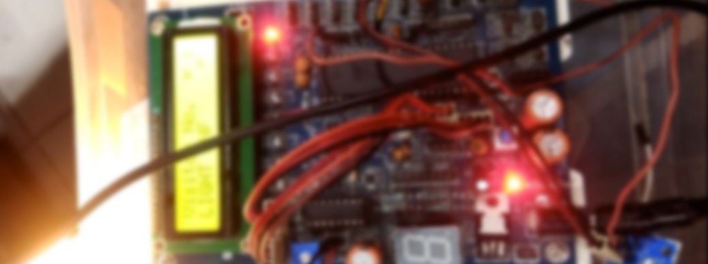

Room Automation System
When the system is powered ON, the microcontroller initially initializes the stack pointer and all other variables. It then scans the input pins (P2.0 and P2.1). In the meantime, when there is no object in front of the IR Sensors, the light from the IR LED would not fall on the Photo Diode of the first sensor pair and hence, the Photo Diode doesn’t conduct. As a result, the output of the IR sensors is LOW. In other words, ports P2.0 and P2.1 are at logic LOW level. If there is a person in front of the IR Sensors, IR light from the IR LED reflects from the person and falls on the Photo Diode. As a result, the Photo Diode starts conducting and the output of the sensor becomes HIGH. In other words, the ports P2.0 and P2.1 are at logic HIGH level. Now when a transition takes place, i.e. a logic HIGH level is received, first at port P2.0 and then at P2.1, the microcontroller sees this as an interruption to sense the passage or entry of a person or an object in front of the IR LED and the Photo Diode. As per the program, the count value is increased and this value is displayed on the 16 x 2 LCD Display. If the microcontroller senses logic HIGH, first on the P2.1 and then on P2.0, it assumes that the person is leaving the room and as per the program, the microcontroller decreases the count as displays the same on the LCD. The program ensures that the count is increased or decreased only when both the sensors detect the person.